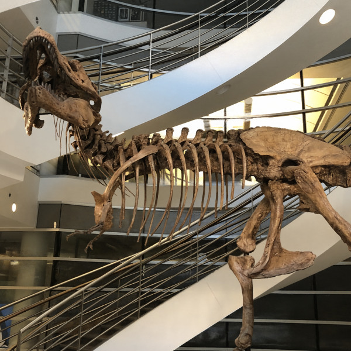
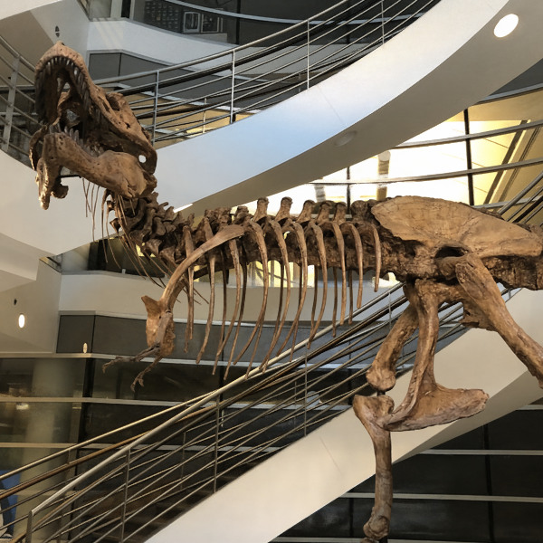

Abstract
We present a novel type of neural fields that uses general radial bases for signal representation. State-of-the-art neural fields typically rely on grid-based representations for storing local neural features and N-dimensional linear kernels for interpolating features at continuous query points. The spatial positions of their neural features are fixed on grid nodes and cannot well adapt to target signals.
Our method instead builds upon general radial bases with flexible kernel position and shape, which have higher spatial adaptivity and can more closely fit target signals. To further improve the channel-wise capacity of radial basis functions, we propose to compose them with multi-frequency sinusoid functions. This technique extends a radial basis to multiple Fourier radial bases of different frequency bands without requiring extra parameters, facilitating the representation of details. Moreover, by marrying adaptive radial bases with grid-based ones, our hybrid combination inherits both adaptivity and interpolation smoothness. We carefully designed weighting schemes to let radial bases adapt to different types of signals effectively.
Our experiments on 2D image and 3D signed distance field representation demonstrate the higher accuracy and compactness of our method than prior arts. When applied to neural radiance field reconstruction, our method achieves state-of-the-art rendering quality, with small model size and comparable training speed.
Video
Overview

We further compose RBFs with multi-frequency sinusoid functions to improve their channel-wise capacity. This technique extends an RBF to multiple radial bases of different frequencies.

Results
Gigapixel Image
Neural Radiance Fields
 
